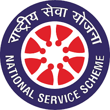

Scattered Information
During a blood-related emergency, finding a suitable donor often means calling multiple people, checking different WhatsApp groups, and relying on scattered information.

A student-led initiative by the NSS unit of PPTM Arts & Science College, Cherur — turning scattered donor information into a single, organized, life-saving network.
During a blood-related emergency, finding a suitable donor often means calling multiple people, checking different WhatsApp groups, and relying on scattered information.
We asked a simple question — what if all donor information lived in one place, structured, searchable, and always up to date?
A mobile-friendly website where donors register once and authorized users can search by blood group, see who's available, and call with one tap.
To use accessible web technology to support NSS social-service activities and encourage a more organized culture of voluntary blood donation.
One digital platform for all donor registrations.
Authenticated access for donor search & office use.
Find donors by blood group and location.
One-tap call button to reach registered donors.
Structured blood request submission.
Mobile-friendly on every phone and screen.
Students register with their blood group, contact details, course, location and current availability — stored securely online.
Office users sign in to search the registered donor directory by blood group, filtered to available donors only.
Each donor card shows a simple Call button that opens the phone dialer instantly — no copy-pasting numbers.
A structured request page collects patient details, blood group, hospital and urgency so the NSS team can respond fast.
The home page shows a real-time count of registered donors, active volunteers, and requests handled.
A planned feature to auto-generate appreciation certificates for registered blood donors.
This project was designed and developed by students of the BSc Computer Science (2026) batch at PPTM Arts & Science College, Cherur — as part of the NSS unit's community-service initiative.
Frontend · Firebase · UX
Firestore · Security Rules
Layouts · Mobile Design
Reports · Testing
We believe technology should serve community. This network is a small step toward building a more organized culture of voluntary blood donation within the NSS family of PPTM Arts & Science College.
Every registration, every search, every call — it all adds up. Thank you for being part of something bigger than yourself.